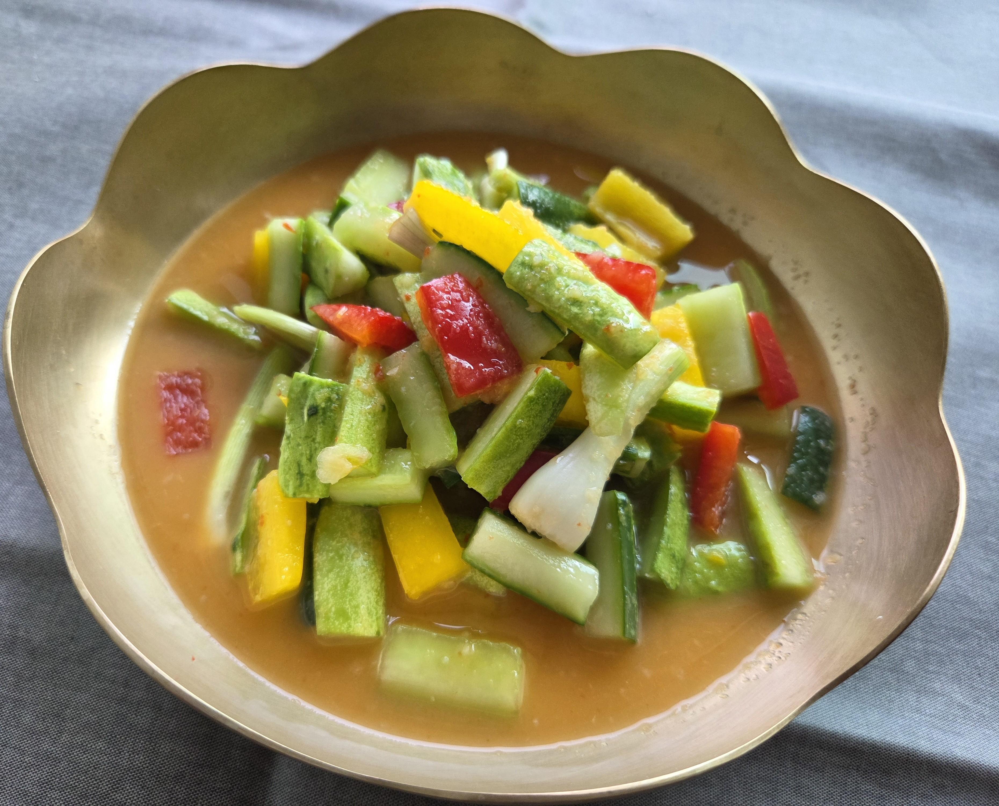
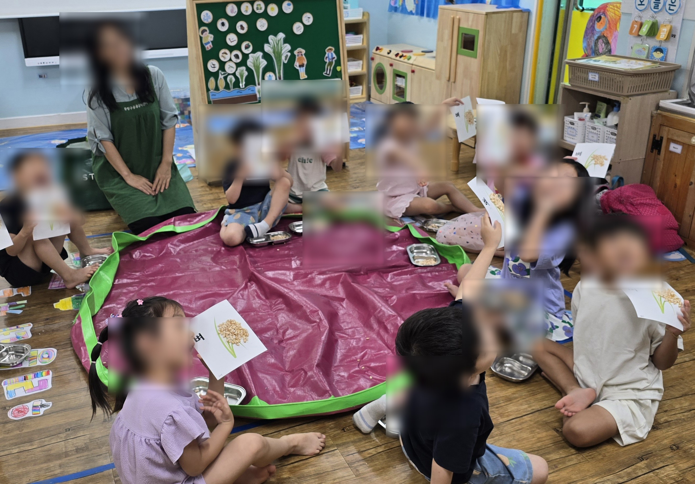
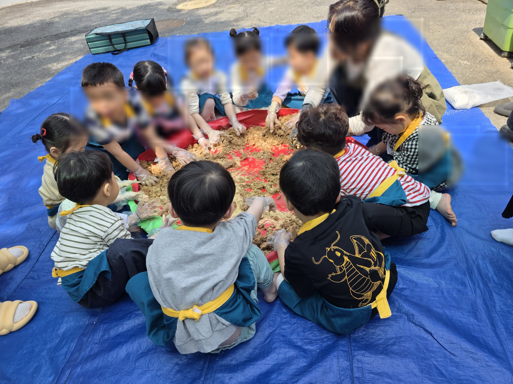
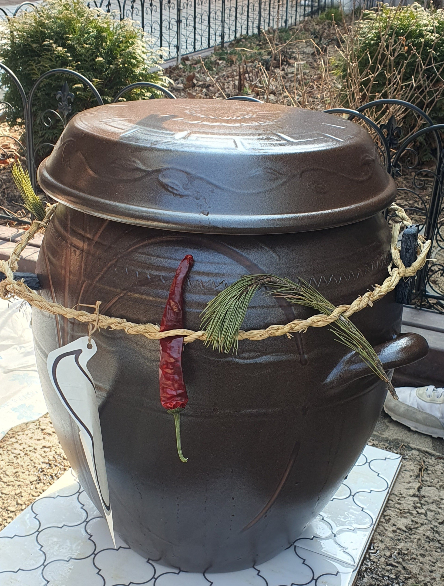
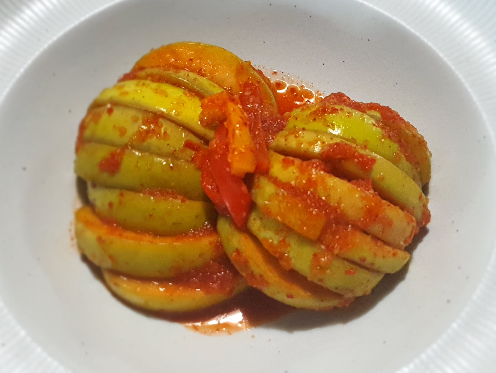
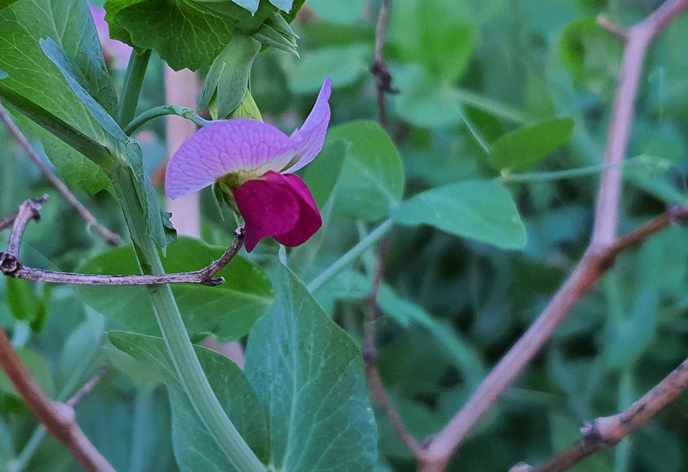
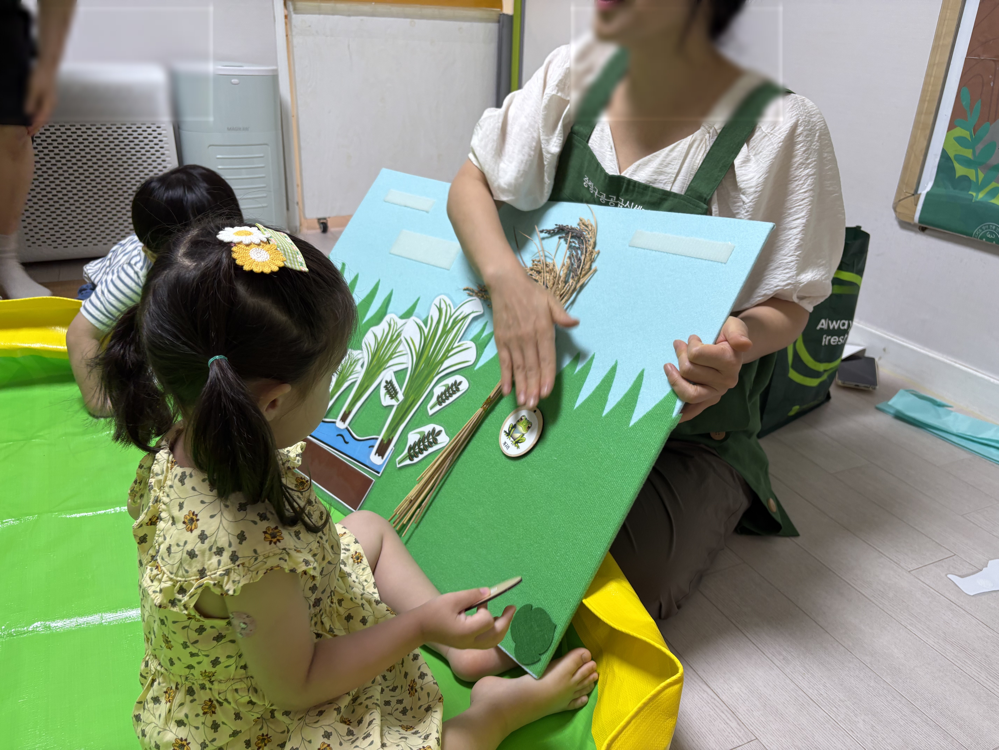
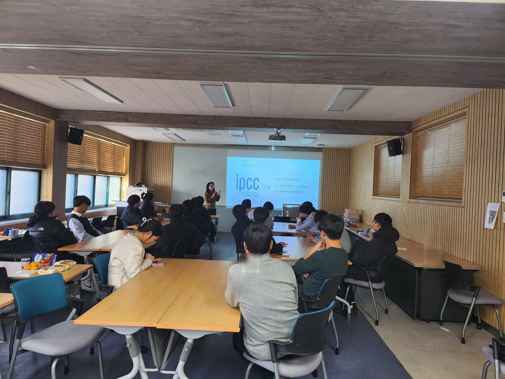
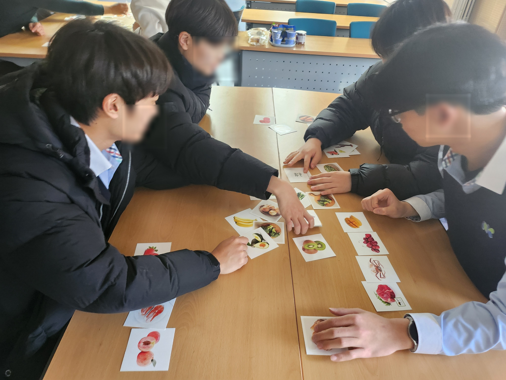
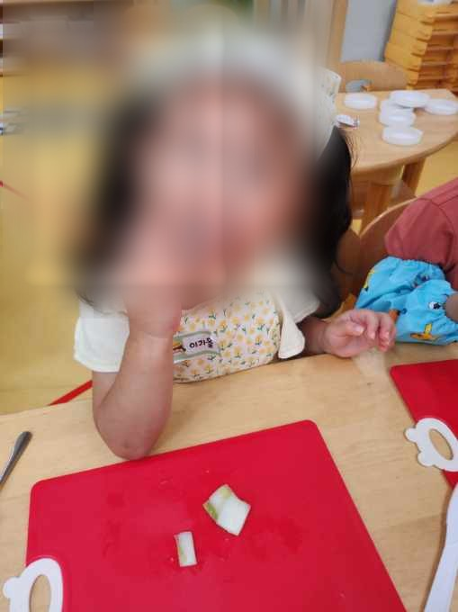

건강한 한 끼
매일의 식탁에서 균형과 제철 식재료를 배워요.
아이부터 어른까지, 내 식탁에서 시작하는 즐거운 식생활교육. 알아보고, 맛보고, 함께 실천해요.

관심 있는 분야를 눌러 수업의 큰 흐름을 확인해 보세요.
논에서 자라는 쌀부터 장독의 발효 이야기까지, 직접 보고 만지는 활동을 담았습니다.

매일의 식탁에서 균형과 제철 식재료를 배워요.
벼의 생김새를 살피고 쌀이 밥이 되는 과정을 알아봐요.

콩과 메주를 만지고, 우리 장이 만들어지는 과정을 경험해요.

장독 안에서 시간이 빚어내는 발효의 변화를 이야기해요.

김치와 장 등 익숙한 발효 음식의 맛과 보관법을 알아봐요.

식재료가 자라는 환경을 관찰하고 계절의 변화를 살펴봐요.

그림 자료와 실물을 연결해 곡식과 식물의 특징을 배워요.

기후 변화가 식탁과 지역 먹거리에 미치는 영향을 생각해요.

그림 카드를 분류하며 여러 식재료와 음식을 알아가요.

재료의 모양과 향, 맛을 천천히 느끼며 친숙해져요.
사진 속 인물의 얼굴은 모두 블러 처리했습니다.
필요한 주제를 선택하면 핵심 수업 내용을 볼 수 있어요.
참여자의 연령과 환경에 맞춰 활동을 조정합니다.
평소 먹는 음식과 식습관을 이야기하며 오늘의 주제를 만나요.
식재료와 음식 활동을 통해 어렵지 않게 핵심을 배워요.
집과 일상에서 이어갈 수 있는 한 가지 실천을 함께 골라요.
대상과 희망 주제를 알려주시면 수업 방향을 함께 이야기해요.
유아·어린이, 청소년, 성인·가족, 어르신 등 대상과 기관 상황에 따라 수업을 구성할 수 있어요.
아니요. 이야기 나누기, 오감 활동, 식재료 탐색 등 공간과 목적에 맞는 활동으로 진행할 수 있어요.
희망 대상과 장소, 수업 목표를 확인한 뒤 가능한 구성과 일정을 안내해 드려요.